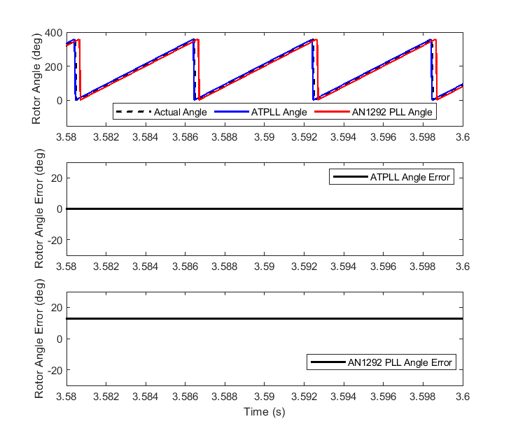
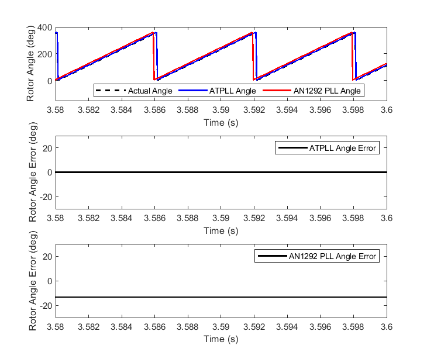

5.4. 位置和速度估计¶
5.4.7. 概述¶
为了支持 PMSM的无传感器控制，MCAF 提供了 AN1292 锁相环（PLL）、角度跟踪锁相环（ATPLL）和 AN1078 滑模观测器（SMO）估计器的选择。除此之外，还通过 dsPIC® DSC 的 QEI（正交编码器接口）外设提供了正交编码器支持。
5.4.8. 比较分析¶
5.4.8.1. 总结¶
标准 |
AN1292 PLL |
QEI |
ATPLL |
ZS/MT |
SMO |
|---|---|---|---|---|---|
添加的 MCAF 版本 |
R1 |
R1, R4 [1] |
R5 [2] |
R7 |
R9 [8] |
传感器 |
相电流、电压 [3] |
正交编码器 |
相电流、电压 |
相电流、电压 |
相电流、电压 |
侵入式？ [6] |
否 |
否 |
否 |
是 [7] |
否 |
可在零速或接近零速时使用？ |
否 |
是 [4] |
否 |
是 |
否 |
可在满速或接近满速时使用？ |
是 |
是 |
是 |
是 [5] |
是 |
支持显著的转子凸性？ |
否 |
是 |
是 |
是 |
是 |
需要显著的转子凸性？ |
否 |
否 |
否 |
是 |
否 |
对电机参数不准确的敏感性 |
中等 |
无 |
低 |
中等 |
中等 |
说明
5.4.8.2. 额外细节¶
AN1292 锁相环（PLL）估计器和角度跟踪锁相环（ATPLL）估计器算法都基于反电动势 d 轴分量的稳态值为零这一原理运行。与 AN1292 PLL 估计器不同的是，ATPLL 估计器在其结构中包含一个 PI 控制器模块。该 PI 控制器需要仔细调节，以便在整个运行速度范围内稳定且令人满意地运行。另一方面，AN1292 PLL 没有 PI 控制器，在实践中更易实现。以额外调节 PI 控制器为代价，ATPLL 估计器提供了以下相对于 AN1292 PLL 估计器的优势。
ATPLL 估计器的优势之一是其适用于具有凸极和非凸极转子的电机。通过为凸极和非凸极转子的电机选择合适的反电动势计算方程，ATPLL 估计器可以正确估计转子角度和转子速度。
ATPLL 估计器相对于 AN1292 PLL 估计器的另一主要优势是其对反电动势常数值的鲁棒性。对于 AN1292 PLL 估计器，估计器使用的反电动势常数与电机实际反电动势常数之间的偏差会导致估计转子角度的稳态误差。估计速度没有稳态误差。然而，ATPLL 估计器不受反电动势常数偏差的影响，能够准确估计转子速度和角度。
图 5.77 展示了稳态下的实际转子角度、ATPLL 估计器的估计角度和 AN1292 PLL 估计器的估计角度，当电机的实际反电动势常数（\(K_{e\_act}\)）比估计器使用的值（\(K_{e\_estimator}\)）低 20%。 图 5.77 还在单独的图中展示了 AN1292 PLL 估计器和 ATPLL 估计器的估计角度误差。可以观察到，AN1292 PLL 估计器的估计角度存在显著的稳态误差，而 ATPLL 估计器的估计角度没有稳态误差。
类似的图展示在 图 5.78 其中电机的实际反电动势常数（\(K_{e\_act}\)）比估计器使用的值（\(K_{e\_estimator}\)）高 20%。可以观察到，在这种情况下 AN1292 PLL 估计器的估计转子角度也存在稳态误差，但误差的符号相反。然而，ATPLL 估计器的估计转子角度不显示任何稳态误差。
{kind=link}

图 5.77 ATPLL 和 AN1292 PLL 的估计转子角度（ \(K_{e\_act} = 0.8 \times K_{e\_estimator}\)¶
{kind=link}

图 5.78 ATPLL 和 AN1292 PLL 的估计转子角度（ \(K_{e\_act} = 1.2 \times K_{e\_estimator}\)¶